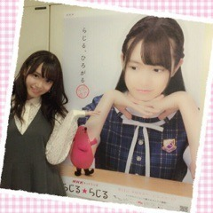
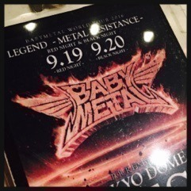

土日は名古屋でした！
セブン‐イレブン限定ミニライブイベント、
15th全国握手会。
遊びに来てくださった皆さん
ありがとうございました( ˇωˇ )
セブン‐イレブン限定ミニライブイベントは
前回も言ったけれど
セットリストがほんと好き。
残すは京都！
楽しみにしてます( ˇωˇ )
マイメロちゃんとのコラボグッズ
可愛い～羨ましい～♡
全国握手会はかりんちゃんとペア。
NHKコンビだね～と言われて
ハッとした。本当だ。
途中から急遽ゆったんも加わっての
3人レーンになりました！
そっから私が途中で抜けたりと
度々レーンに変更があって
皆さんにはご迷惑おかけしました。
2人ともハイテンションガールなので
私も頑張りましたo(^o^)o
楽しかったです！ありがとう！
前回の握手会は私の体調が良くなくて
皆さんに心配かけてしまったので
元気な姿をお見せできてよかったです！
初めましての方が沢山いらっしゃったので
新たな出会いがたくさんあって
幸せな1日でした。
ずっと前から応援していたけれど
今回初めて足を運んでみたよという方もいて
やっぱり直接会ってお話できるの嬉しい！
もちろんお久しぶりの方も
元気そうな顔を見れて良かった(´｡•ω•｡`)
ライブの感想とか、
あれ聞いたよこれ見たよ～とか
色々報告ありがとうございました！
日曜の夜は、らじらー！サンデー
ゲストは声優アーツに中村繪里子さん、
乃木坂から衛藤美彩ちゃんを
お招きしました(^o^)
番組特別編成のため
20:05～21:00、22:30～23:00という
イレギュラーな形になりました
聞いてくださった皆さんありがとう！
30分の中にギュッて詰め込んでたから
私は終始あたふたしたまま
気づいたらエンディングになってたけれど
美彩先輩は安定して
ホームランばしばし打って帰られました
流石ですね、安心と信頼のみさ先です。
今度はフルで是非！来てね！

NHKスマホアプリ「らじる★らじる」
放送局拡大PRポスター完成！
私は広島担当(^o^)
ムービーやラジオコメントなど
色々とチェックしてみて下さいませ。
らじらー！アシスタントMCとして、
広島県出身として、
このPRに携われて嬉しいです！

BABYMETAL WORLD TOUR 2016
LEGEND-METAL RESISTANCE-
TOUR FINAL AT TOKYO DOME
行ってきました～
元気になった(^o^)
ジャンルは違えど同じ表現者、
凄いな～と改めて思いました。
ワールドツアー、本当にお疲れ様でした！
～お知らせ～
雑誌
9/30 月刊エンタメ 11月号
9/30 BUBKA 11月号
10/31 BUBKA 12月号
イベント
9/23 東京国際ブックフェア トークショー
リリース
9/30 NOGIBINGO!6 BD&DVD
11/9 16thシングル
台風が続きますね、
みなさんお気をつけて。
(＊´・ω・＊)